네모 상업용 부동산 매물 데이터 심층 분석 대시보드
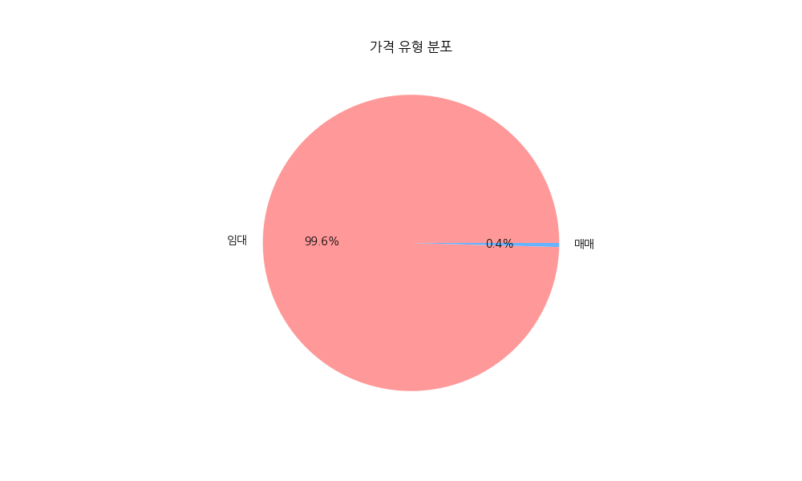
상업용 부동산 시장은 월세 중심의 임대차 계약이 99% 이상을 차지하며, 매매 시장은 극도의 희소성을 보입니다. 이는 자산 소유보다 운영 효율성 중심의 시장임을 시사합니다.
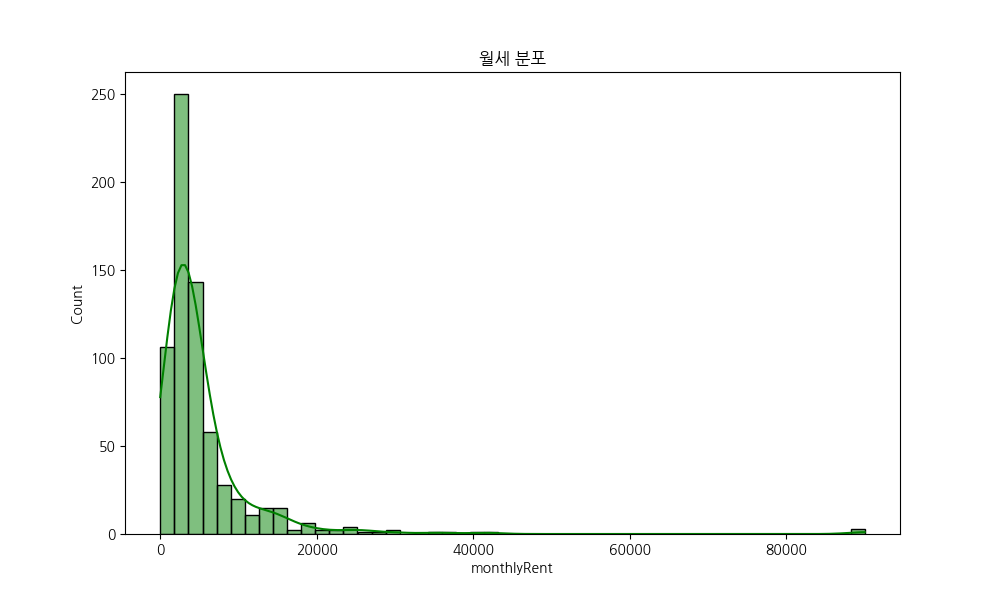
평균 500만 원 내외의 구간에 가장 많은 매물이 포진해 있습니다. 이는 해당 지역 입점 업체들의 표준적인 운영 비용 기준점이 됩니다.
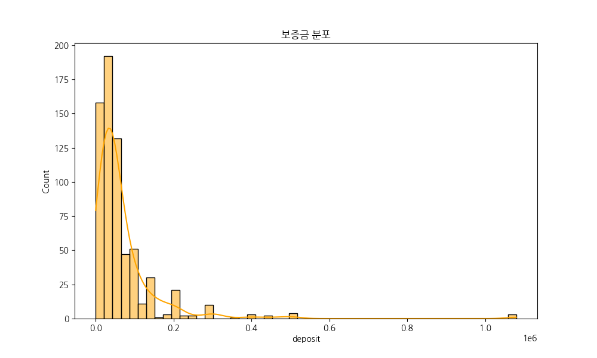
대다수의 매물이 1억 미만 구간에 밀집되어 있으나, 고가 구간에도 지속적인 분포가 나타나 자본 규모에 따른 시장 양극화를 보여줍니다.
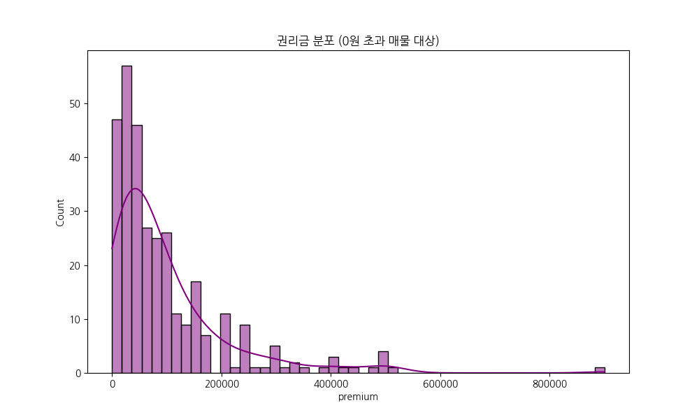
권리금 평균이 보증금 평균을 상회하는 경우가 빈번하며, 이는 기존 상권의 인지도와 시설 가치가 매우 높게 평가받고 있음을 의미합니다.
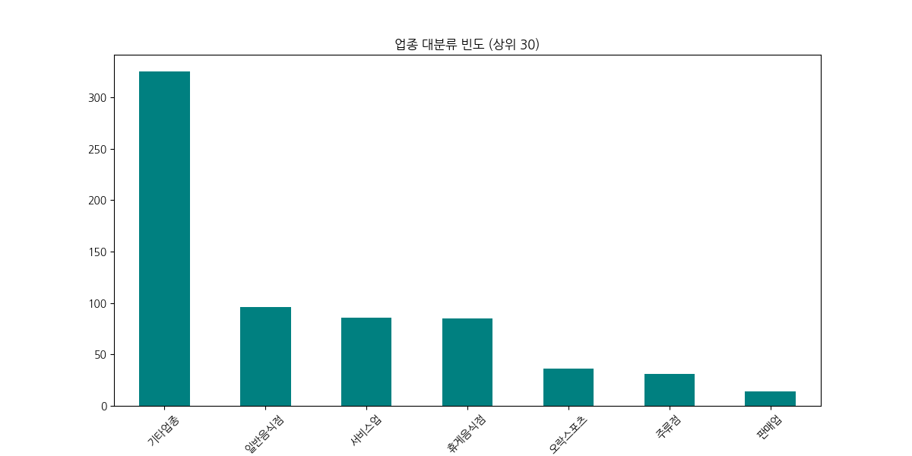
기타업종(오피스 등)과 F&B 업종이 시장의 주축을 이룹니다. 직장인 배후 수요를 타겟으로 한 서비스 및 먹거리 인프라가 견고합니다.
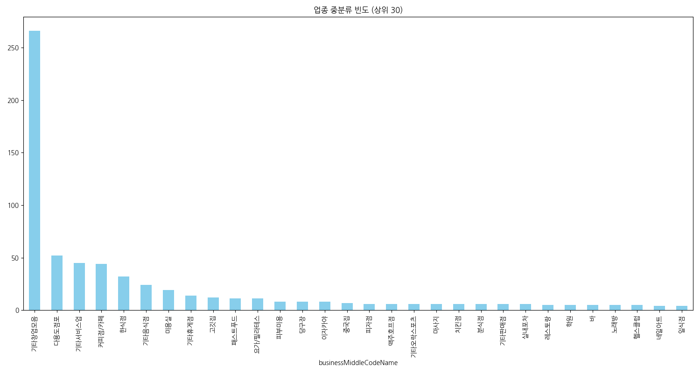
커피점/카페와 한식점의 강세가 뚜렷하며, 최근에는 팝업스토어나 스튜디오 용도의 다용도 점포 공급이 증가하는 추세입니다.
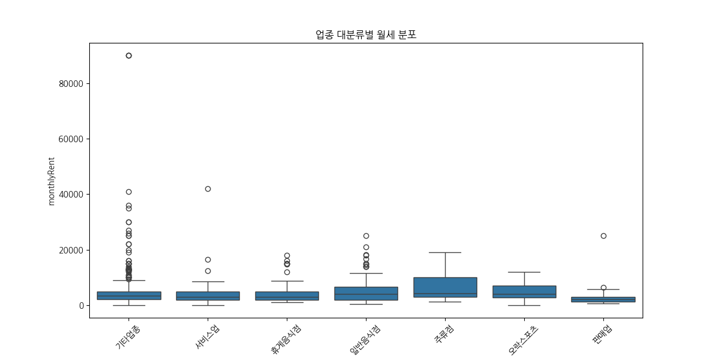
주류점과 일반음식점의 상위 임대료 구간이 높게 형성되어 있습니다. 이는 업종별 객단가와 수익 구조가 임대료 지불 능력과 직결됨을 보여줍니다.
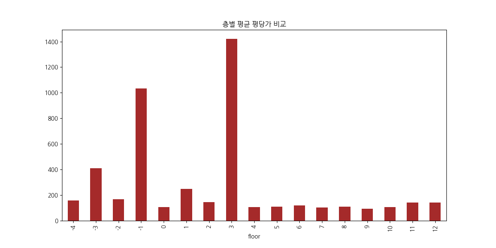
1층의 가치가 높지만, 루프탑이나 지하 스튜디오 등 특화 공간의 경우 층수를 뛰어넘는 평당 가치를 창출하고 있습니다.
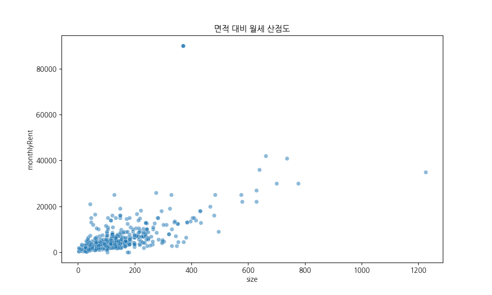
면적과 임대료는 강한 양의 상관관계를 보입니다. 대형 매물일수록 건물 상태와 주차 편의성 등에 따른 가격 분산이 크게 나타납니다.
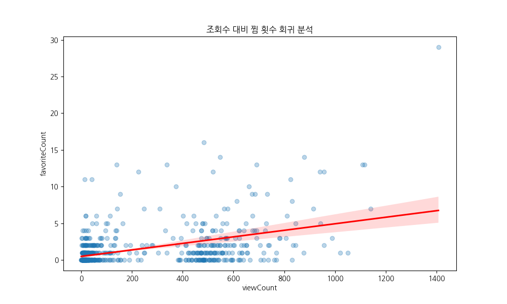
단순 조회수보다 '찜'으로 이어지는 매력도가 중요합니다. 가격 조건과 시각적 정보가 우수한 매물이 높은 전환율을 기록합니다.
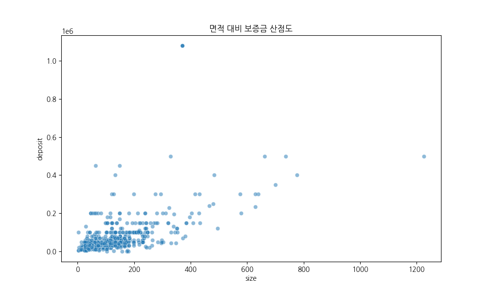
소형 면적임에도 높은 보증금을 형성하는 매물들은 '입지'의 힘을 증명합니다. 면적 한계를 뛰어넘는 역세권 프리미엄이 존재합니다.
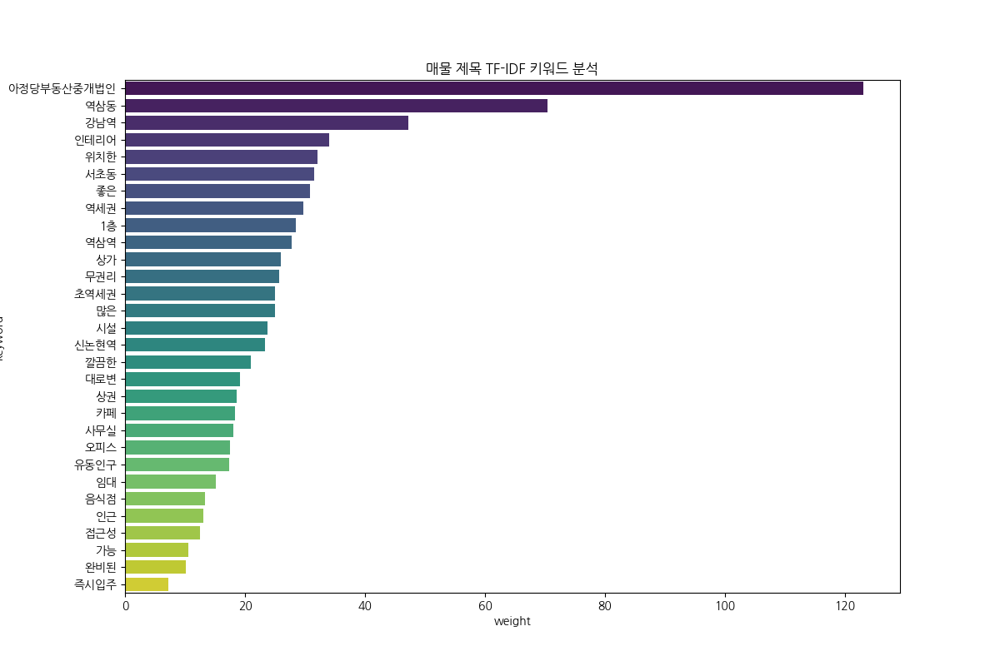
역세권, 인테리어 완비, 무권리 등이 시장의 주요 셀링 포인트입니다. 소비자들은 비용 절감과 즉시 영업 가능 여부에 민감하게 반응합니다.